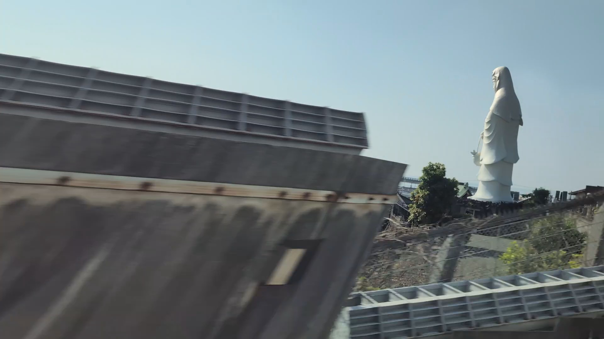
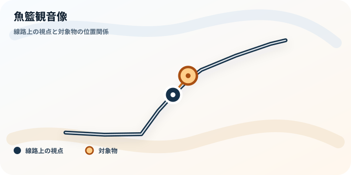

TOKAIDO SHINKANSEN WINDOW VIEW
When can you see Gyoran Kannon Statue from the Shinkansen?
A white Kannon, for a heartbeat.

- Section
- Odawara → Atami, near Hayakawa
- Seat side
- Seat A · sea side
- Timing
- About 33 minutes after leaving Tokyo on a Nozomi train
- Photos
- 1 photos
Location at a glance
Open map
A lightweight static map showing only the track viewpoint and landmark, without loading map tiles. Use Live Map while riding
How to find Gyoran Kannon Statue
Just after Odawara, near Hayakawa Station, a white Kannon statue appears for only a moment on the Seat A side. It is the kind of sudden window-seat sight that leaves you wondering what you just saw. Gyoran Kannon is associated with fish and the sea, making this a quietly Odawara-like discovery.
If you are traveling from Tokyo toward Shin-Osaka, start watching the Seat A · sea side window as you approach Odawara → Atami, near Hayakawa. If you are traveling toward Tokyo, the order is reversed.
Why this view matters
Gyoran Kannon Statue is one of the window views that make the Tokaido Shinkansen more than a transfer. The train moves fast, so visibility depends on weather, seat position, and timing.